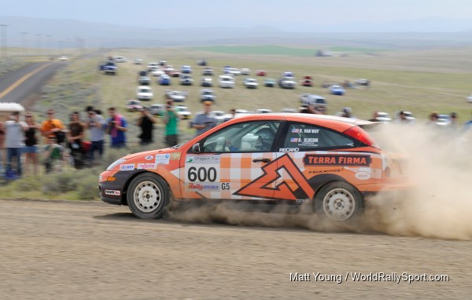

25 two-wheel-drive rally cars battled over the rugged Oregon Trail Rally stages, with the outcome in doubt until the very end.
Portland, OR (May 20, 2010) – The first round of the 2010 MaxAttack! Series, presented by the Danza del Sol winery, was one of the most entertaining in the history of the series. There were 25 competitors entered, and any one of a number of teams could contend for the MaxAttack! win.
The weekend would prove to be a battle royale between the Ford Focus of Dillon Van Way/Ben Slocum and the Honda CRX of Cody Crane /Billy Irvin. Cody was setting some spectacular times in his CRX, but he was beset with mechanical problems that would ultimately cost him the win. After Saturday’s competition, the two teams were separated by just 1.2 seconds on the stages, but due to a penalty picked up by the Ford crew, the gap was increased to 31.2 seconds. To compound the intrigue, crossing the finish line at the end of the last stage Saturday, Crane’s transmission selector mechanism broke, leaving him with a gearbox of neutrals. In a display of good sportsmanship, Van Way and Slocum towed the Honda from the last stage through the MTC at the end of the day. Cody was up all night rebuilding the gearbox, with the assistance of a local Honda enthusiast, and was able to compete the following day.
On Sunday, the battle between Crane and Van Way continued until Stage 13, when Crane slowed significantly after his Honda inhaled a filter full of silt. Van Way finished the stage nearly on his tailpipe. Showing a great degree of maturity, Van Way eased off a bit for the last two stages, and cruised to the MaxAttack! win. Both Van Way and Crane are to be commended for stellar drives.
In third place came the brand-new Scion XD of Christopher Duplessis and Ron Zaras. Duplessis is normally seen in a VW GTi, but with the assistance of 0-60 magazine the team traded the trusty Golf for the Scion for this event. The Scion was “stock as a stone” mechanically, but if anyone can pedal a near-production car to the front of the pack, it would be Chris Duplessis; he is a master of conservation of energy around rally corners. Chris and Ron were knocking on the door of the Crane/Van Way fight until nearly two minutes of transit speeding penalties dropped them back on Saturday night. The team stayed comfortable in third for the remainder of the event, bringing home the Scion XD to a very respectable finish in its first outing.
The battle for fourth and fifth remained intense throughout the whole weekend. After two days of rallying, four teams were separated by 14.2 seconds fighting for the last two MaxAttack! money spots. The four teams were Brian Gottlieb/Patrick Darrow (Toyota FX-16), Chris & Lori O’Driscoll (Honda CRX), Gaylord Van Brocklin/Steve Secviar (VW Golf) and John Conley/Keith Rudolph (Dodge Neon SRT-4). At one point, early in the rally, Garth Ankeny and Russ Kraushaar were running fourth in a 1969 Saab 96, but they tore off a driver’s side lower a-arm, which put an end to that challenge. In the end, Van Brocklin and Gottlieb captured the two final money spots. Gaylord Van Brocklin also won the Terra Firma Clothing MaxImprover Award, for the greatest improvement from start to finish. He and co-driver Steve Secviar took their VW Golf from a 26th place starting position to a fourth place finish.
Things didn't go so well for MaxAttack favorites Tom and Don Burress of the Demon Rally Team when their always-fast VW Golf failed to make it through the Friday night festivities at Portland International Raceway unscathed. The team broke an axle early on, but was able to return for the Saturday and Sunday regional events. Another team with high expectations, Dave Henderson and Terry McDowell, finished Friday night but in the process blew the motor of their new Mazda3.
The Top 5 finishers in the first round of the 2010 MaxAttack! series, and prize money won, were:
1. Dillon Van Way/Ben Slocum, Ford Focus ($1500)
2. Cody Crane/Billy Irvin, Honda CRX ($1200)
3. Chris Duplessis/Ron Zaras, Scion XD ($1000)
4. Gaylord Van Brocklin/Steve Secviar, VW Golf ($800)
5. Brian Gottlieb/Pat Darrow, Toyota FX-16 ($500).
The Rallysports Group of America would like to thank the organizers of the Oregon Trail for their gracious assistance and support, all the volunteers (who ate a lot of dust this weekend!), and Rally America.
The 2010 MaxAttack! Rally Series Presented by Danza del Sol consists of three events, which are:
• Oregon Trail, May 14-16, Portland, The Dalles, and Dufur, OR, http://www.oregontrailrally.com
• New England Forest Rally, July 16-17, Bethel, ME, http://www.newenglandforestrally.com
• Lake Superior Performance Rally, October 16-17, Houghton, MI, http://www.lsprorally.com
Oregon Trail and the New England Forest Rally will be the qualifying events for the Jake Himes Cup, and the Lake Superior Performance Rally will be the central Shootout event.
Each event will feature a $5,000 prize fund to be distributed among the top two-wheel-drive teams, as well as a season championship. For more information about the MaxAttack! Series and the Rallysports Group of America, please visit http://www.max-attack.com.
About Danza del Sol Winery
Nestled in the rolling hills of the beautiful Temecula Wine Valley, Danza Del Sol Winery is a thirty-five acre estate winery located in Southern California’s Wine Country. While Danza Del Sol’s tasting room officially opened in February 2010, the winery itself already has a remarkable history. The estate was previously owned by Dr. William Filsinger and his late wife Katharine, who provided the Temecula Wine Valley with exceptional wines for nearly 30 years. Danza Del Sol is dedicated to producing a unique range of premium varietal and proprietary blended wines that are sure to exceed your expectations, at affordable prices. For more information, please visit http://danzadelsol.com/.
About Rallysports Group of America
Rallysports Group of America, Inc. (RSGA) was formed as an organization in 2006 to advance the sport of performance stage rally in the United States. By providing education on performance driving, car preparation and safety, and by fostering the growth of meaningful competition, RSGA seeks to provide a sustainable and competitive arena for the advancement of North American performance rally that promotes increased value for rally competitors, organizers, and sponsors alike. For more information, please visit http://www.max-attack.com.
About Rally America, Inc.
Based in Golden Valley, Minn., Rally America sanctions the premier rally racing series in the United States, the Rally America National Championship Series. In 2010, Rally America will conduct six National Championship events at venues across the country, from Olympia, Wash., to Bethel, Maine. Rally America competitors reach speeds well over 100 mph in modified street cars on natural-terrain courses of gravel, dirt or snow. In the Fall of 2010, Rally America will also introduce European-style wheel-to-wheel rally cross to North America. For more information regarding Rally America, Inc., the 2010 Rally America National Rally Championship or the new European-style rally cross events taking place at the New Jersey Motor Sports Park in the fall of 2010, please visit www.rally-america.com.
Mandatory Photo Credit: The Ford Focus of Dillon Van Way and Ben Slocum charges towards MaxAttack! victory, by Matt Young, World Rally Sport, http://www.worldrallysport.com